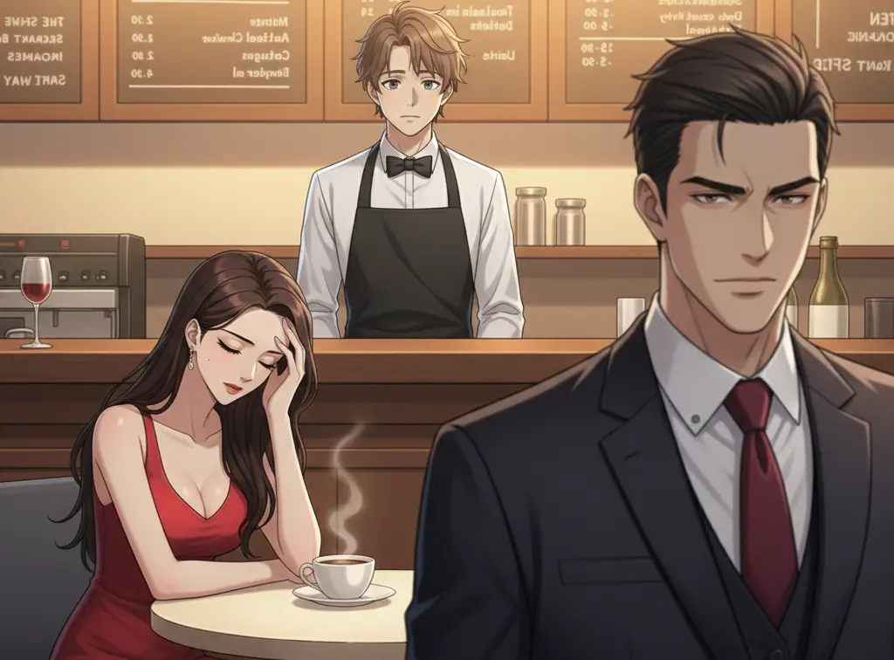

Chapter 1 – Rivals at the Same Table
Natalia Carr.
Alex clenched his jaw.
She never misses a chance.
Later that evening, fate decided to be cruel—or interesting.
Both Alex and Nat arrived at The Chef’s Kitchen,
the most exclusive restaurant in the city.
Crystal lights sparkled above marble floors, and soft music filled the air.
It was a place where deals were whispered between bites of expensive food.
Alex sat with his clients, confident and composed.
Moments later, Nat was seated just two tables away.
Their eyes met.
A Battle of Words
Dinner had barely begun when the conversation drifted toward business.
“Your expansion into the European market was bold,” Nat said loudly enough for Alex to hear.
“But bold doesn’t always mean wise.”
Alex smiled without looking at her.
“Coming from someone who barely held her market share last year, that’s cute.”
Nat raised an eyebrow.
“Funny. Numbers tell a different story.”
The tension spread through the restaurant. Even the clients sensed it.
That was when Liam approached.
The Waiter with Steady Hands
Liam O’Connell moved between tables with quiet confidence.
At twenty-five, he had learned how to stay invisible in places meant
for powerful people.
His uniform was perfectly pressed, his smile polite and calm.
He reached Alex’s table, holding a tray with a single glass of red wine.
“Sir, your Merlot,” Liam said softly.
At that exact moment, Alex gestured sharply toward Nat.
“And your so-called innovation is just recycled ideas—”
His hand struck the tray.
The glass tipped.
Time slowed.
The Spill That Changed Everything
The wine spilled across Nat’s dress, deep red against soft white fabric.
Splash.
Gasps filled the room.
Liam froze, his heart pounding.
“I—I’m so sorry, ma’am,” he stammered.
“It was my mistake. Please forgive me.”
Alex stood abruptly. “Watch where you’re going!” he snapped.
But Nat didn’t shout.
She didn’t even look at Alex.
She looked at Liam.
“It’s alright,” she said calmly.
“It was an accident.”
Liam blinked.
“You’re… not angry?”
Nat smiled faintly.
“Everyone makes mistakes.”
She turned to the restaurant owner, who had rushed over.
“Please don’t punish him,” she added firmly.
A Rival’s Kindness
Alex stared, stunned.
This was the woman who fought him ruthlessly in boardrooms.
The woman who never showed weakness.
Yet here she was—defending a waiter.
Liam bowed slightly, gratitude filling his eyes.
“Thank you, ma’am.”
As he stepped away, Nat glanced at Alex.
“Maybe you should watch your hands when you’re angry, Mr. Vance.”
Her words were soft—but sharp.
For the first time, he wasn’t thinking about winning. Alex said nothing.
He was thinking about her.
And Liam, walking back to the kitchen, felt something strange too.
Not fear.
But hope.
Chapter 2 – Coffee, Silence, and Hidden Hearts

The restaurant slowly became a familiar place.
For Alex and Nat, The Chef’s Kitchen was no longer just a
dining spot—it was a battlefield without weapons.
Every visit carried unspoken competition, sharp glances, and quiet comparisons.
Yet something had changed since the night of the spill.
Alex noticed it first.
Nat no longer looked untouchable.
Between conversations with clients,
her smile sometimes faded.
Her shoulders drooped slightly,
as if the weight of the entire company rested on them.
And Liam noticed everything.
A Quiet Observer
Liam continued serving tables with the same polite smile, but his eyes often drifted toward Nat’s corner.
He noticed how she stirred her coffee even after the sugar had dissolved.
How she stared out the window, lost in thought.
How success had not protected her from loneliness.
She always ordered coffee after meetings.
Black. No sugar.
One evening, Nat came alone. No clients. No assistants. Just silence.
Liam hesitated—then poured her coffee himself, even though his shift had ended.
“Long day?” he asked gently.
Nat let out a tired breath.
“Every day feels long when everyone expects you to win.”
Words That Matter
Liam stood still, unsure if he had crossed a line.
“People think being at the top means having control,” she continued.
“But sometimes… it feels like standing alone.”
Liam spoke carefully.
“You don’t look weak when you’re tired, ma’am. You look human.”
Nat looked up at him, surprised.
No one in her world spoke like that.
No one dared.
“You fight honestly,” Liam added. “That’s rare.”
The words stayed with her.
For the first time in a long while, Nat felt seen—not as a CEO, not as a rival—but as a person.
“Thank you,” she said quietly.
A Growing Feeling
From that night on, Nat lingered longer after her meals.
She spoke less about business and more about pressure, expectations, and fear of failure.
Liam listened without judgment.
And somewhere between coffee refills and soft conversations, Liam’s heart began to change.
He knew the truth.
She belonged to a world far above his own.
Yet he couldn’t stop caring.
Across the Room
Alex watched from a distance.
He noticed Nat laughing softly at something the waiter said.
Not a polite smile. A real one.
An unfamiliar feeling stirred inside him.
Jealousy.
Not of Liam—but of the peace Nat seemed to find when she wasn’t fighting him.
Alex wondered when rivalry had turned into something heavier.
Something personal.
Unspoken Connections
That night, Nat left the restaurant later than usual.
As she stood to go, she paused near Liam.
“Your coffee helps more than you know,” she said.
Liam smiled.
“I’m glad it does.”
She walked out into the city lights.
Liam watched her leave, knowing his feelings were growing quietly—and dangerously.
And Alex, from his table, watched them both.
Three hearts had begun moving toward a collision none of them yet understood.
Chapter 3 – The Midnight Call
The city never truly slept—but that night, it felt unusually heavy.
In his penthouse office, Alex Vance stared at the glowing screen of his laptop.
Lines of corrupted code reflected in his tired eyes.
The V-Code bug was spreading faster than expected.
One wrong move, and years of work could collapse overnight.
He loosened his tie.
Failure wasn’t something he feared publicly.
But alone—at midnight—it sat beside him like a shadow.
Across the city, Nat Carr stood barefoot in her apartment, laptop open, coffee untouched.
Her team had stopped replying hours ago. Investors were waiting. The market was watching.
For the first time in her career, Nat felt powerless.
She picked up her phone.
Stopped.
Then picked it up again.
Calling Alex felt dangerous.
But staying silent felt worse.
The Call
The phone rang once.
Twice.
Alex answered.
“Nat?” His voice was low, surprised. “Is everything okay?”
She swallowed.
“Are you awake?”
A pause.
“Yes,” he said honestly. “I don’t think I could sleep even if I tried.”
Nat exhaled slowly.
“Are you… worried about the V-Code bug?”
Alex leaned back in his chair.
“So it’s not just me.”
“No,” she said quietly. “I haven’t slept either.”
For a moment, neither spoke. The silence between them felt different—no sharp edges, no competition.
Just exhaustion.
Walls Come Down
“My board thinks I have it under control,” Nat admitted.
“They always do. But tonight… I don’t.”
Alex closed his eyes.
“I’ve built my entire company on being right,” he said.
“And for the first time, I’m scared I might not be.”
Nat’s voice softened.
“I don’t want you to fail, Alex.”
He opened his eyes.
Not defeat.
Not victory.
Just honesty.
“We fight like enemies,” she continued, “but we love the same things—our work, our vision. Losing you to this bug would feel wrong.”
Alex let out a quiet laugh—bitter, relieved.
“I never thought I’d hear comfort from you,” he said.
“Neither did I,” Nat replied.
Something Changes
The clock ticked past 1:00 a.m.
Alex straightened.
“Let’s talk tomorrow morning. Clear minds. Together.”
Together.
The word lingered.
“For now,” he added gently, “try to rest.”
Nat smiled faintly, though he couldn’t see it.
“Goodnight, Alex.”
“Goodnight, Nat.”
The call ended—but neither moved.
That night, the rivalry that once fueled them began to dissolve into something far more dangerous.
Understanding.
And somewhere deep inside, both of them realized the truth:
The person who understood their fear best…
was the one they were supposed to defeat.
Chapter 4 – When Rivalry Turns Into Love
The city felt unfamiliar.
Alex and Nat had traveled for one of the most important tenders of their careers. A neutral city.
Neutral ground. No home advantage. No armies behind them.
Just the two of them.
That alone made everything feel dangerous.
A Different Kind of Evening
Dinner was quiet.
For once, there were no laptops. No files. No sharp remarks about market shares.
Nat broke the silence first.
“Do you ever miss who you were before all this?” she asked, staring at her glass.
Alex considered the question.
“Sometimes,” he said. “But I don’t know who that person is anymore.”
Nat smiled faintly.
“I used to think success would make the noise stop.”
“Did it?” Alex asked.
She shook her head.
“It made it louder.”
That was when Alex realized something terrifying.
He understood her. Completely.
The Terrace
Later that night, they stepped onto the hotel terrace.
The city stretched below them—millions of lights, endless ambition. The wind was cool, carrying the distant hum of traffic.
Nat rested her hands on the railing.
“People think rivalry is hatred,” she said softly.
“But with us… it’s never been that.”
Alex stepped closer.
“No,” he agreed. “It’s recognition.”
She turned toward him.
“If we weren’t competitors…” she began, then stopped herself.
Alex’s voice was quiet.
“Finish the sentence.”
Nat swallowed.
“If we weren’t rivals… I think we would’ve chosen each other long ago.”
The words hung between them—fragile, honest, terrifying.
The Truth Between Them
Alex reached out slowly, giving her time to pull away.
She didn’t.
“We fight because we’re afraid,” he said.
“Afraid of losing. Afraid of being replaced. Afraid of being alone at the top.”
Nat’s eyes shimmered.
“And with you,” she whispered, “I don’t feel alone.”
That was the moment the last wall fell.
Alex brushed a strand of hair from her face, his touch gentle—nothing like the battles they fought in boardrooms.
“Nat,” he said, his voice unsteady,
“I don’t want to win against you anymore.”
Her breath caught.
“I want you.”
The Kiss
He leaned in slowly, giving her every chance to stop him.
She didn’t.
Their kiss was soft at first—hesitant, almost afraid.
Then deeper. Warmer. Honest.
Years of tension melted away.
Nat’s hands gripped his coat as if afraid he might disappear.
Alex held her like something precious he’d almost lost without realizing it.
When they finally pulled apart, both were breathing hard.
“This changes everything,” Nat whispered.
Alex rested his forehead against hers.
“I know.”
A Choice Made
They stood there in silence, knowing the truth.
This wasn’t a mistake.
This was a choice.
“We can’t go back,” Nat said quietly.
Alex smiled—not the confident CEO smile, but something softer.
“I don’t want to.”
Nat closed her eyes and leaned into him, the city watching silently below.
That night, rivals became lovers.
And neither of them realized yet—
Love would be the most dangerous deal they’d ever make.
Chapter 5 – The Waiter’s Goodbye and a New Beginning

Love, once chosen, demands sacrifice.
Alex and Nat returned to the city changed—but careful.
In public, they were still rivals.
In private, they were something far more dangerous.
They met late at night.
In quiet places.
Always aware that one wrong move could destroy everything they had built.
Yet every stolen moment made the risk feel worth it.
Liam’s Silent Hope
Liam noticed the change.
Nat smiled more—but her smiles no longer reached him.
Her eyes carried a secret he wasn’t part of.
Still, he hoped.
He worked extra shifts, saved carefully, and bought a handmade watch from a small craftsman. It wasn’t expensive—but it was honest.
Like his love.
One evening, Nat sat alone at her usual table.
Liam approached slowly, his heart pounding.
“Nat ma’am,” he said softly, holding out the watch,
“I know our worlds are different… but when you’re here, everything feels lighter.”
She looked at the watch.
Then at him.
And she understood.
The Truth That Breaks
Nat held the watch gently, her hands trembling.
“This is the most meaningful gift I’ve ever received,” she said.
“And that’s why I can’t accept it the way you want me to.”
Liam’s smile faltered.
“My heart,” she continued, voice breaking,
“belongs to someone else.”
He already knew the answer.
But hearing the name still hurt.
“Alex,” she whispered.
The silence was heavy.
Liam nodded slowly, forcing a smile that didn’t reach his eyes.
“I see,” he said.
“I always knew… someone like you wouldn’t belong to a simple life.”
Nat reached for his hand.
“You gave me peace,” she said softly.
“But Alex gives me strength. And I need both—yet I can only choose one.”
A Dignified Goodbye
Liam gently pulled his hand back.
“Then I hope,” he said quietly,
“he protects your heart better than the world ever did.”
He took the watch and stepped away.
He didn’t look back.
Because if he did—
he might never recover.
Time Moves Forward
Months passed.
The business world was shaken by the announcement of a historic merger:
Vance–Carr Insights
Two rivals.
One vision.
At a private celebration held at The Chef’s Kitchen, Alex and Nat stood side by side—not as enemies, but as partners.
And soon… as fiancé and fiancée.
Near the coffee counter stood Liam.
Stronger. Calmer. Wiser.
An Unexpected Offer
“Liam,” Alex said sincerely,
“you see people when others see positions.”
Nat smiled.
“We want you to lead our Employee Wellness and Development Program.”
Liam’s eyes filled with tears.
He hadn’t won love.
But he hadn’t lost himself either.
“I accept,” he said quietly.
The Final Moment
As the party ended, Nat held Alex’s hand.
“Maybe rivalry brought us together,” she said.
Alex kissed her knuckles gently.
“Or maybe we needed someone who taught us kindness first.”
Across the room, Liam prepared a final cup of coffee—steady hands, peaceful heart.
Some loves are meant to stay.
Others are meant to teach.
And some people…
are meant to walk away so others can move forward.
THE END
A story of ambition, love, sacrifice, and quiet strength—
where hearts meet beyond power, pride, and status.
💬 Comments